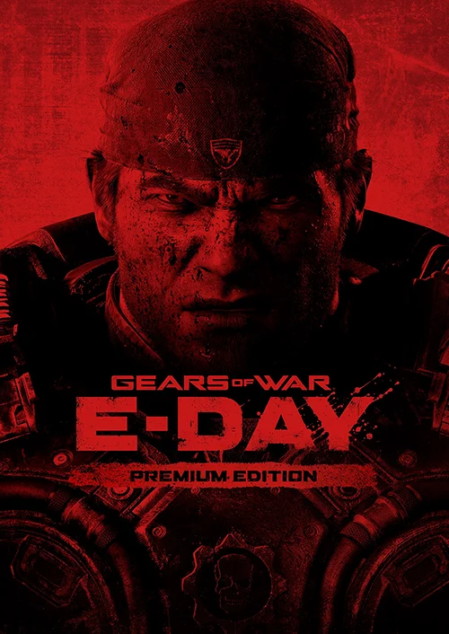
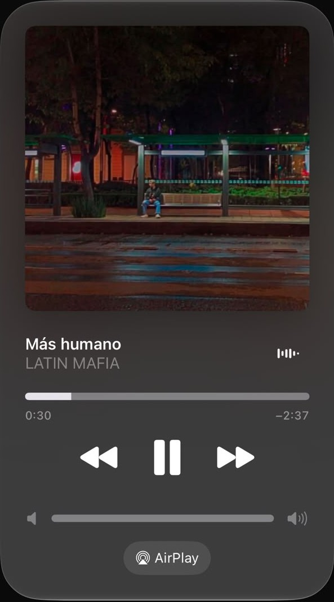

Estudiante interesado en ciberseguridad, criptografía y machine learning.
Lo que hago en mi tiempo libre.


Alan Turing (Londres, 1912 – Wilmslow, 1954) fue un matemático británico considerado uno de los padres de la computación. Durante la Segunda Guerra Mundial trabajó en Bletchley Park, el centro de criptoanálisis del Reino Unido.
Enigma era una máquina electromecánica de cifrado que usaba la Alemania nazi. Combinaba rotores y un tablero de conexiones, de modo que cada letra se sustituía de forma distinta en cada pulsación. El número de configuraciones posibles era enorme, y la clave cambiaba cada día.
Los criptoanalistas polacos, encabezados por Marian Rejewski, habían descifrado las primeras versiones de Enigma antes de la guerra. Turing y su equipo desarrollaron la «Bombe», una máquina que probaba configuraciones de forma automática hasta encontrar la clave diaria. Esto permitió leer mensajes de la marina alemana y, según varios historiadores, acortó la guerra.
Idea clave para criptografía: la seguridad de un sistema no puede depender de que el enemigo ignore cómo funciona. Debe depender solo de la clave.
La llave pública se generará después. Por ahora el enlace solo apunta al archivo futuro.